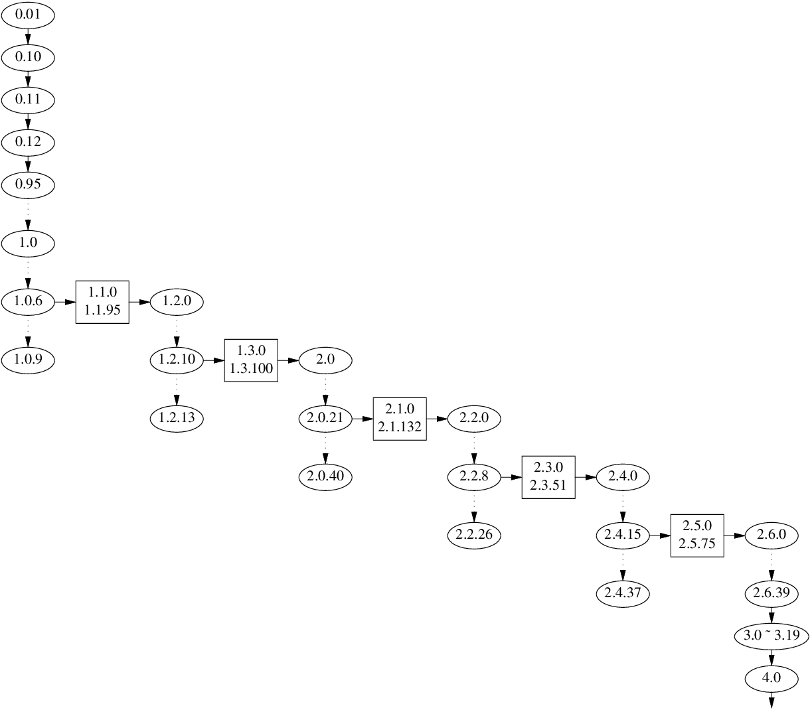
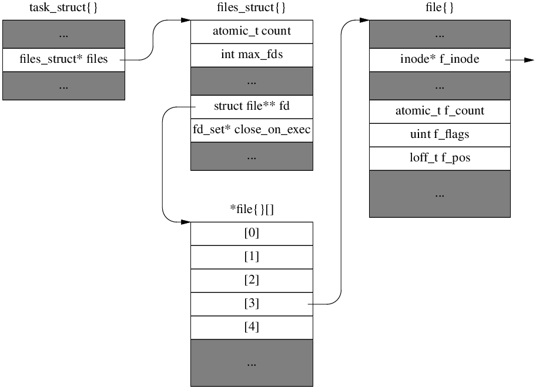
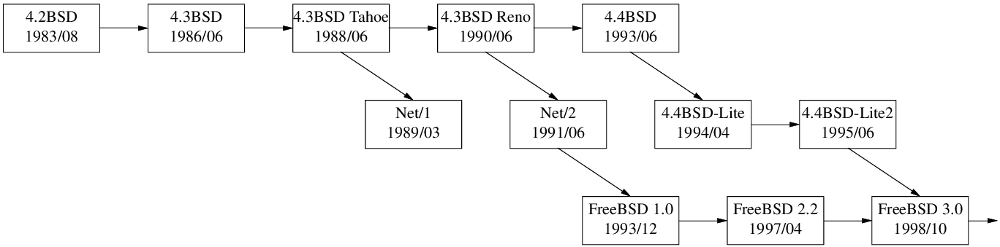

Evolution of File Descriptor Table in Linux Kernel

0.01 to 1.1.10
A fixed length array in struct task_struct.
// include/linux/sched.h of linux-1.1.10
struct task_struct {
// ...
struct file * filp[NR_OPEN];
fd_set close_on_exec;
// ...
};
Note 1: file_table and inode_table were made dynamic in 0.99.10.
| Version | NR_OPEN |
NR_FILE |
NR_INODE |
|---|---|---|---|
| 0.01 | 20 | 64 | 32 |
| 0.12 | 20 | 64 | 64 |
| 0.95 | 20 | 64 | 128 |
| 0.96a-patch3 | 32 | 64 | 128 |
| 0.96c-patch1 | 32 | 128 | 128 |
| 0.96pre | 32 | 64 | 128 |
| 0.97 | 32 | 128 | 128 |
| 0.98.4 | 256 | 128 | 128 |
| 0.99.10 | 256 | 1024 | 2048 |
// fs/file_table.c of linux-0.99.10
-struct file file_table[NR_FILE];
+struct file * first_file;
Note 2: ext2 file system was added 0.99.7.
1.1.11 to 1.3.21
Split into struct files_struct.
1.1.11 was released in 1995/05.
// include/linux/sched.h of linux-1.3.21
struct files_struct {
int count;
fd_set close_on_exec;
struct file * fd[NR_OPEN];
};
struct task_struct {
// ...
/* filesystem information */
struct fs_struct fs[1];
/* open file information */
struct files_struct files[1];
/* memory management info */
struct mm_struct mm[1];
// ...
};
1.3.22 to 2.1.89
Change files from a struct[1] to a pointer, so it can be shared by threads within a process.
1.3.22 was released in 1995/09. LinuxThreads needs 2.0 kernel, which was released in 1996/07.
// include/linux/sched.h of linux-2.0.2
/* Open file table structure */
struct files_struct {
int count;
fd_set close_on_exec;
fd_set open_fds;
struct file * fd[NR_OPEN];
};
struct task_struct {
// ...
/* filesystem information */
- struct fs_struct fs[1];
+ struct fs_struct *fs;
/* open file information */
- struct files_struct files[1];
+ struct files_struct *files;
/* memory management info */
- struct mm_struct mm[1];
+ struct mm_struct *mm;
// ...
};
2.1.90 to 2.6.13
Change fixed-length array fd to dynamic array.
2.2.0 was released in 1999/01.
// include/linux/sched.h of linux-2.2.0
/*
* Open file table structure
*/
struct files_struct {
atomic_t count;
+ int max_fds;
+ struct file ** fd; /* current fd array */
fd_set close_on_exec; // changed to fd_set* in 2.2.12
fd_set open_fds;
- struct file * fd[NR_OPEN];
};
struct task_struct {
// ...
/* open file information */
struct files_struct *files;
// ...
};

2.6.14 to now (4.15.7)
Introduce struct fdtable for RCU. 2.6.15 was released in 2006/01, Ubuntu 6.04 LTS and Debian 4 ship it.
// include/linux/fdtable.h of linux-2.6.37
struct fdtable {
unsigned int max_fds;
struct file __rcu **fd; /* current fd array */
fd_set *close_on_exec;
fd_set *open_fds;
struct rcu_head rcu;
struct fdtable *next;
};
/*
* Open file table structure
*/
struct files_struct {
/*
* read mostly part
*/
atomic_t count;
struct fdtable __rcu *fdt;
struct fdtable fdtab;
/*
* written part on a separate cache line in SMP
*/
spinlock_t file_lock ____cacheline_aligned_in_smp;
int next_fd;
struct embedded_fd_set close_on_exec_init;
struct embedded_fd_set open_fds_init;
struct file __rcu * fd_array[NR_OPEN_DEFAULT];
};
struct task_struct {
// ...
/* open file information */
struct files_struct *files;
// ...
};
struct file itself.
// include/linux/fs.h of linux-4.9
struct file {
union {
struct llist_node fu_llist;
struct rcu_head fu_rcuhead;
} f_u;
struct path f_path;
struct inode *f_inode; /* cached value */ // added back in 3.9, same as f_path.dentry->d_inode
const struct file_operations *f_op;
/*
* Protects f_ep_links, f_flags.
* Must not be taken from IRQ context.
*/
spinlock_t f_lock;
atomic_long_t f_count;
unsigned int f_flags;
fmode_t f_mode;
struct mutex f_pos_lock; // Fixed in 3.14
loff_t f_pos;
struct fown_struct f_owner;
const struct cred *f_cred;
struct file_ra_state f_ra;
u64 f_version;
#ifdef CONFIG_SECURITY
void *f_security;
#endif
/* needed for tty driver, and maybe others */
void *private_data;
#ifdef CONFIG_EPOLL
/* Used by fs/eventpoll.c to link all the hooks to this file */
struct list_head f_ep_links;
struct list_head f_tfile_llink;
#endif /* #ifdef CONFIG_EPOLL */
struct address_space *f_mapping;
} __attribute__((aligned(4))); /* lest something weird decides that 2 is OK */
FreeBSD up to 9.3

4.3BSD-Reno and older BSDes use fixed-length array of struct file*.
struct user {
// ...
struct file *u_ofile[NOFILE]; /* file structures for open files */
// ...
};
From BSD Net/2 up to FreeBSD 9.3 use a similiar dynamic array data structure of Linux 2.0 (see diagram above.),
where proc == task_struct, filedesc == files_struct, file == file.
// sys/proc.h
/*
* Process structure.
*/
struct proc {
// ...
struct filedesc *p_fd; /* (b) Open files. */
// ...
};
// sys/filedesc.h
struct filedesc {
struct file **fd_ofiles; /* file structures for open files */
char *fd_ofileflags; /* per-process open file flags */
struct vnode *fd_cdir; /* current directory */
struct vnode *fd_rdir; /* root directory */
struct vnode *fd_jdir; /* jail root directory */
int fd_nfiles; /* number of open files allocated */
NDSLOTTYPE *fd_map; /* bitmap of free fds */
int fd_lastfile; /* high-water mark of fd_ofiles */
int fd_freefile; /* approx. next free file */
u_short fd_cmask; /* mask for file creation */
u_short fd_refcnt; /* thread reference count */
u_short fd_holdcnt; /* hold count on structure + mutex */
struct sx fd_sx; /* protects members of this struct */
struct kqlist fd_kqlist; /* list of kqueues on this filedesc */
int fd_holdleaderscount; /* block fdfree() for shared close() */
int fd_holdleaderswakeup; /* fdfree() needs wakeup */
};
// sys/file.h
struct file {
void *f_data; /* file descriptor specific data */
struct fileops *f_ops; /* File operations */
struct ucred *f_cred; /* associated credentials. */
struct vnode *f_vnode; /* NULL or applicable vnode */
short f_type; /* descriptor type */
short f_vnread_flags; /* (f) Sleep lock for f_offset */
volatile u_int f_flag; /* see fcntl.h */
volatile u_int f_count; /* reference count */
// ...
off_t f_offset;
// ...
};